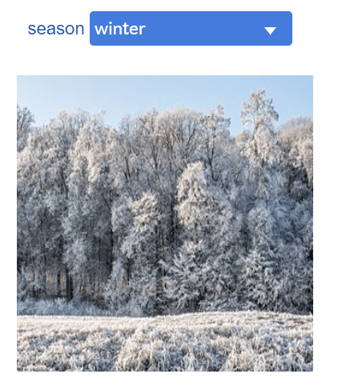

Annotation & Video¶
This group includes widgets for graphically annotating the dashboard.
Label¶
Label widget allows the user to write multiline text, and apply common widget formatting options if necessary.
Image¶
Image widget allows the user to annotate the dashboard by importing jpg or png images.
When the enableActuator parameter is set to true, an actuator named base64Image appears in the "Data Connection" tab. It allows to display a base64 string encoded image. Animations may be achieved through dataNodes programming.
See example below.

Example :
By default, keepRatio parameter is true. When set to false, the image ratio is no longer preserved and the image will inherit its container size.
The hideImageURL parameter controls the display of the image selection URL in the widget. When an Image widget is dropped on the dashbard, this parameter is set by default to true and allows the selection of an image. When an image has been selected, the parameter is automatically set to false to avoid any display issues. If another image has be selected, this parameter must be manually set to true to re-enable the image selection.
Markdown¶
Markdown widget accept a markdown description in the form of string.
Example:
HTML¶
HTML widget accepts a HTML document description in the form of string.
Example :
Camera¶
The main purpose of this widget is to use the device's camera.
The widget must be connected to a variable-type dataNode and will write information to its base64Image, mimeType and imageData actuators.
Example :